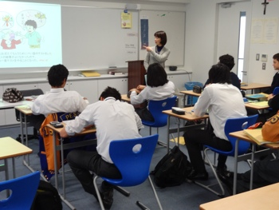

IB Japanese B HL
Course Description
This course is designed to prepare for IB-B HL exam. The main focus on this course is on development of language skills necessary to meet the demands of daily social contact. 600 kanji will be studied and students will write composition by using them. In addition, the course aims to develop the students' intercultural understanding. Therefore, HL level students are required to read two works of literature originally written in Japanese and articles about articles about global issues and current issues in Japan.
Outline
Through this course, students will be required to recognize the communicative purposes of the following texts and to know how to respond appropriately to them.
In addition, students will be required to produce texts that serve the following communicative purposes.
- Description: set of instructions, guidelines and pamphlet
- Written interaction: formal and informal letters
- Explanation: report of a situation or event
- Argument: letters to editors, debate for and against an issue
- Narration: short story
- Spoken interaction: play-scripts, interviews
- Analysis and critique: review of books, films
We will cover the following topics: Global Issue (ex. environmental problem), Communication and Media, Social relationships (ex. minorities, education), Science and technology, and Japanese literature. As an integral part of class activities, students will be required to give class presentations, discussion or other performances in Japanese. In the 2nd year, we will focus more on the written assignment (required essay on Japanese literature) and past papers.
Assessment
Grades will be decided by the combination of what students do in class, e.g., unit test, assignment (paper, oral), quizzes(kanji, vocabulary), homework, and classroom performance.
Resources
Main Texts:
- Articles from newspapers and magazines
- Simplified Japanese Short Stories
Supplementary Materials:
- Rapid Reading Japanese
- Basic Kanji Book 2, Intermediate Kanji Book 1
Other Information
- Overdue homework will lead to point deductions and will directly affect the overall evaluation.
- Students are required to manage the text copy and other materials we use in class by themselves.